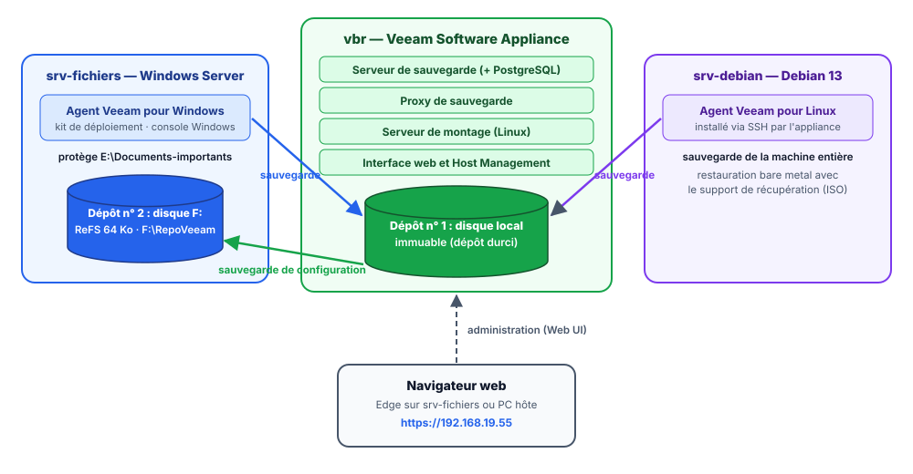

Découvrir Veeam Data Platform 13¶
Résumé
Avant d'installer quoi que ce soit, ce cours présente l'éditeur Veeam, sa suite Veeam Data Platform et le logiciel au cœur des TP : Veeam Backup & Replication (souvent abrégé VBR).
Il détaille les nouveautés de la version 13 (serveur de sauvegarde sous Linux, interface web, sécurité renforcée), les licences (et le piège de la Community Edition sur l'appliance Linux), puis les composants d'une infrastructure Veeam, illustrés par le lab qui sera construit dans les parties suivantes.
| Propriété | Valeur |
|---|---|
| Difficulté | Débutant |
| Durée estimée | 1 h 30, dont 30 min de formation en ligne facultative |
| Version décrite | Veeam Backup & Replication 13.1.2 (octobre 2026) |
| Place dans le parcours | Partie 2 sur 7 du parcours Veeam Backup & Replication |
| Dernière mise à jour | 2026-11-02 |
Ce qui a changé par rapport à la version 1.5 du support (juin 2024)
- Le support décrivait la version 12, qui ne s'installait que sur Windows. La version 13 ajoute un serveur de sauvegarde Linux livré en appliance, une interface web et de nouveaux mécanismes de sécurité : la partie « Nouveautés » a été entièrement réécrite.
- Les éditions et le cas particulier de la Community Edition sur l'appliance (restauration uniquement) ont été précisés.
- Le positionnement de Veeam a été actualisé (Gartner 2025).
- Les liens vers la Veeam University ont été mis à jour, l'ancien parcours n'existant plus à la même adresse.
- La partie Veeam ONE (supervision) a été retirée du parcours.
1. Veeam et sa plateforme¶
Veeam Software est un éditeur fondé en 2006, spécialisé dans la sauvegarde et la restauration de données. Son logiciel phare, Veeam Backup & Replication, est devenu une référence en entreprise, d'abord pour sauvegarder des machines virtuelles VMware, puis pour protéger à peu près tout ce qui contient des données.
En 2025, le cabinet d'analystes Gartner a classé Veeam parmi les leaders de son Magic Quadrant des plateformes de sauvegarde et de protection des données, pour la neuvième année consécutive (communiqué de Veeam).
Lire un classement d'analystes avec recul
Un Magic Quadrant compare des éditeurs sur leur vision et leur capacité d'exécution. C'est un indicateur de maturité, pas une preuve que le produit convient à un besoin précis. D'autres solutions sérieuses existent : Commvault, Rubrik, Cohesity, ou des solutions libres comme Bacula, Bareos, BorgBackup et Proxmox Backup Server.
Veeam Data Platform est le nom commercial de la suite. Elle regroupe principalement :
| Produit | Rôle |
|---|---|
| Veeam Backup & Replication (VBR) | Sauvegarde, réplication et restauration. C'est le cœur de la plateforme et le sujet des TP. |
| Veeam ONE | Supervision et rapports sur l'infrastructure de sauvegarde et les environnements virtuels. |
| Veeam Recovery Orchestrator | Orchestration et test automatisé des plans de reprise d'activité (PRA). |
| Veeam Agents (Windows, Linux, Mac, Unix) | Petits logiciels installés sur des machines physiques, des VM ou des instances cloud pour les sauvegarder. Ils sont pilotés par VBR dans les TP. |
La plateforme est vendue en trois éditions de plus en plus complètes : Foundation (essentiellement VBR), Advanced (ajoute Veeam ONE) et Premium (ajoute Recovery Orchestrator). Veeam propose aussi des produits séparés : Veeam Backup for Microsoft 365, Kasten pour Kubernetes, Veeam Data Cloud (sauvegarde en mode service), etc.
1.1 Ce que Veeam Backup & Replication sait protéger¶
VBR sauvegarde et restaure des données situées dans des environnements très variés, sur site comme dans le cloud :
| Famille | Exemples |
|---|---|
| Virtualisation | VMware vSphere, Microsoft Hyper-V, Nutanix AHV, Proxmox VE (depuis 2024), et depuis la version 13.1 Citrix XenServer, XCP-ng, Sangfor aSV ainsi que des plateformes certifiées via l'API universelle d'hyperviseur (UHAPI) |
| Machines physiques ou isolées | Windows, Linux, macOS, Unix (AIX, Solaris), grâce aux agents |
| Partages de fichiers et stockage objet | NAS (SMB, NFS), serveurs de fichiers, compartiments S3 |
| Applications | Microsoft SQL Server, Exchange, Active Directory, SharePoint, Oracle, SAP HANA, PostgreSQL, MongoDB… |
| Cloud | Machines et bases de données sur AWS, Microsoft Azure et Google Cloud |
Dans ce parcours, aucun hyperviseur n'est piloté par VBR : on protège un serveur de fichiers Windows et un serveur Linux avec les agents Veeam, ce qui fonctionne quel que soit l'hyperviseur utilisé pour le lab.
2. Les nouveautés de la version 13¶
Le support d'origine portait sur la version 12. La version 13 (fin 2025), puis la 13.1 (juillet 2026), changent profondément la façon de déployer et d'administrer VBR.
2.1 Un serveur de sauvegarde sous Linux : la Veeam Software Appliance¶
Jusqu'à la version 12, le serveur VBR s'installait uniquement sur Windows. La version 13 propose en plus la Veeam Software Appliance :
- une image ISO qui installe en une fois un système Rocky Linux durci et le logiciel Veeam, sans aucun réglage du système à faire soi-même ;
- un système verrouillé : pas de compte
rootutilisable, connexion SSH désactivée par défaut, profil de sécurité DISA STIG appliqué automatiquement, cryptographie conforme FIPS ; - un dépôt de sauvegarde local immuable prêt à l'emploi sur le second disque ;
- des mises à jour du système et de Veeam livrées et testées par Veeam.
L'intérêt est double : moins de travail pour l'administrateur, et une surface d'attaque réduite. Les rançongiciels s'attaquent en priorité aux serveurs de sauvegarde, souvent des serveurs Windows membres du domaine et mal protégés. La version Windows de VBR reste disponible.
Pourquoi ce parcours utilise l'appliance
L'appliance est la méthode de déploiement mise en avant par Veeam depuis la version 13. Elle s'installe sans licence Windows et illustre concrètement les notions de durcissement et d'immuabilité vues dans le cours sur la sauvegarde.
2.2 Trois interfaces d'administration¶
| Interface | Où ? | Sert à… |
|---|---|---|
| Veeam Web UI | Navigateur, https://<appliance>/ |
Administrer VBR : dépôts, jobs, restaurations. Nouveau en version 13, enrichi en 13.1 (agents Windows et Linux, groupes de protection). |
| Console Veeam Backup & Replication | Application Windows, téléchargeable depuis l'appliance | Toutes les fonctions, y compris les plus avancées. C'est la console historique, celle des captures du support v12. |
| Host Management | Navigateur, https://<appliance>:10443/ |
Administrer le système de l'appliance : réseau, heure, mises à jour, comptes, journaux. |
À cela s'ajoute la console texte de l'appliance (sur l'écran de la VM), utilisée pour l'assistant de configuration initiale et le dépannage.
2.3 Une sécurité renforcée par défaut¶
- Authentification multifacteur (MFA) obligatoire pour l'administrateur de l'appliance, avec une application de type Google Authenticator ou Microsoft Authenticator (codes à usage unique TOTP).
- Rôle de Security Officer (« responsable de la sécurité ») : un second compte, distinct de l'administrateur, qui doit approuver les opérations sensibles (réinitialiser le MFA de l'administrateur, ouvrir un accès de support, supprimer des sauvegardes…). C'est le principe des quatre yeux : un attaquant qui vole un seul compte ne peut pas tout détruire.
- Veeam Infrastructure Appliance : une appliance Linux durcie du même type, destinée aux proxys et aux dépôts supplémentaires.
2.4 Les apports de la version 13.1¶
Parmi plus de 70 nouveautés (notes de version) :
- de nouveaux hyperviseurs (Citrix XenServer, XCP-ng, Sangfor aSV) et la réplication de VM Proxmox VE ;
- la gestion complète des agents Windows et Linux dans l'interface web, y compris la restauration bare metal de machines Windows ;
- la restauration automatisée d'une forêt Active Directory ;
- Veeam Intelligence, un assistant à base d'IA pour diagnostiquer les problèmes ;
- un transport réseau sur un seul port, plus simple à autoriser dans les pare-feux.
3. Les licences¶
3.1 Types de licences¶
| Type | Principe |
|---|---|
| Abonnement (subscription) | La forme courante : on paie chaque année le droit d'utiliser le logiciel et le support. |
| Évaluation (trial) | Gratuite, 30 jours, toutes les fonctions de l'édition Premium. Elle s'obtient avec un compte Veeam en téléchargeant le produit. C'est elle qu'utilisent les TP. |
| NFR (Not For Resale) | Gratuite, renouvelable, réservée à certains profils (formateurs, partenaires, experts certifiés) pour des labs. |
| Location (rental) | Pour les prestataires de services qui facturent la sauvegarde à leurs clients. |
| Community Edition | Gratuite et sans date de fin, voir ci-dessous. |
La plupart des licences sont des licences universelles (Veeam Universal License, VUL) comptées en instances : chaque machine virtuelle, serveur physique ou cloud protégé consomme une instance, et les postes de travail en consomment une fraction. Les restaurations ne consomment rien.
3.2 Le piège de la Community Edition¶
Sans clé de licence, Veeam Backup & Replication fonctionne en Community Edition, mais son comportement dépend du type de serveur :
- installé sur Windows, il sauvegarde gratuitement un petit nombre de charges de travail (10 instances), avec quelques fonctions en moins ;
- sur l'appliance Linux, la Community Edition ne permet que la restauration de données existantes : aucune nouvelle sauvegarde n'est possible.
Une clé d'essai est donc indispensable pour ce parcours
Le support v12 indiquait qu'à défaut de licence, le produit fonctionnait en Community Edition. C'est toujours vrai pour un serveur Windows, mais pas pour l'appliance utilisée ici : sans la clé d'évaluation de 30 jours, les TP de sauvegarde sont impossibles. La partie 3 explique comment l'obtenir.
4. Les composants d'une infrastructure Veeam¶
Une infrastructure VBR se compose de plusieurs rôles. Dans une petite installation, tous sont regroupés sur une seule machine ; dans une grande, ils sont répartis sur des serveurs dédiés pour encaisser la charge et rapprocher les données de leur stockage.
4.1 Le serveur de sauvegarde (backup server)¶
C'est le chef d'orchestre. Il conserve la configuration (dans une base de données PostgreSQL), planifie et lance les jobs, coordonne les autres composants et tient l'inventaire des sauvegardes. Il peut s'agir de l'appliance Linux ou d'un serveur Windows, physique ou virtuel.
4.2 Les consoles¶
La console Windows, l'interface web et Host Management (voir 2.2) sont les outils de l'administrateur. Elles se connectent au serveur de sauvegarde : on peut les utiliser depuis un autre poste que le serveur lui-même.
4.3 Le Veeam Data Mover (« déménageur de données »)¶
C'est le composant qui transporte réellement les données. Il lit les données de la machine source, les déduplique (ne garde qu'une fois les blocs identiques), les compresse, éventuellement les chiffre, puis les écrit dans le stockage cible. Il est déployé automatiquement sur les proxys, les dépôts et les passerelles.
4.4 Le proxy de sauvegarde (backup proxy)¶
Le proxy est l'« ouvrier » qui traite les données pendant un job :
- proxy VMware : il lit les disques des VM via les instantanés de vSphere. Par défaut, ce rôle est sur le serveur de sauvegarde, mais on ajoute des proxys (Windows ou Linux) pour répartir la charge ;
- proxy de sauvegarde à usage général : il traite les sauvegardes de partages de fichiers, de stockage objet et certaines sauvegardes d'agents ;
- proxy Hyper-V hors hôte (off-host) : il décharge l'hôte Hyper-V de production en traitant les données à sa place.
4.5 Le serveur passerelle (gateway server)¶
Certains stockages ne peuvent pas exécuter de Data Mover : partages SMB ou NFS, appliances de déduplication (Dell Data Domain, HPE StoreOnce), stockage objet. Un serveur passerelle fait alors l'intermédiaire : il fait tourner le Data Mover à la place du stockage et écrit dedans. Pour limiter le trafic réseau, il doit être proche du stockage. Dans le lab, l'appliance joue ce rôle pour le partage SMB du serveur de fichiers.
4.6 Le serveur de montage (mount server)¶
Pour restaurer un fichier ou un élément d'application (un courriel, un objet Active Directory) sans restaurer toute la machine, VBR monte le contenu de la sauvegarde sur le serveur de montage, puis en copie les éléments voulus. Il sert aussi aux restaurations sécurisées (analyse antivirus avant restauration) et aux restaurations de fichiers de partages NAS. Il doit lui aussi être proche du dépôt.
4.7 Le dépôt de sauvegarde (backup repository)¶
C'est l'emplacement de stockage des fichiers de sauvegarde. Il peut s'agir :
- d'un disque local d'un serveur Windows ou Linux ;
- d'un dépôt durci (Hardened Repository), sur Linux, qui rend les sauvegardes immuables. Le disque de données de l'appliance en est un ;
- d'un partage réseau SMB ou NFS (via une passerelle) ;
- d'un stockage objet (Amazon S3, Azure Blob, Wasabi, MinIO…) ;
- d'un dépôt évolutif (Scale-Out Backup Repository, SOBR), qui assemble plusieurs dépôts et peut déplacer automatiquement les anciennes sauvegardes vers le cloud.
Les fichiers de sauvegarde Veeam portent des extensions propres : .vbk pour une sauvegarde complète, .vib pour une incrémentielle et .vbm pour les métadonnées qui décrivent la chaîne de sauvegarde.
4.8 Les composants dans le lab des TP¶

5. Se former gratuitement : la Veeam University¶
Veeam propose une formation en ligne gratuite, la Veeam University, accessible avec un compte Veeam. Le parcours consacré à Veeam Data Platform commence par un module sur les comptes, les rôles et les licences, suivi d'un petit quiz.
Conseil
Créer son compte Veeam dès maintenant : il sert aussi à télécharger l'ISO et à obtenir la clé d'évaluation dans la partie suivante. Une adresse électronique d'école ou professionnelle est parfois demandée pour la clé d'essai.
6. Questions de révision¶
- Quelle est la différence entre Veeam Data Platform et Veeam Backup & Replication ?
- Citer deux avantages de la Veeam Software Appliance par rapport à un serveur VBR sous Windows.
- À quoi sert le rôle de Security Officer ?
- Un stagiaire installe l'appliance sans clé de licence et ne parvient pas à créer de job de sauvegarde. Pourquoi ?
- Quel composant transporte, compresse et déduplique les données ?
- Pourquoi un dépôt sur un partage SMB a-t-il besoin d'un serveur passerelle ?
- Que faut-il pour restaurer un seul fichier sans restaurer toute la machine ?
Corrigé
- Veeam Data Platform est la suite commerciale (VBR, Veeam ONE, Recovery Orchestrator…). VBR est le logiciel de sauvegarde et de restauration qui en est le cœur.
- Au choix : installation clé en main, système durci (STIG, pas de
root, FIPS), dépôt immuable intégré, mises à jour gérées par Veeam, pas de licence Windows. - À approuver les opérations sensibles demandées par l'administrateur (principe des quatre yeux). Un attaquant qui vole le compte administrateur ne peut pas, seul, supprimer les sauvegardes ou désactiver la sécurité.
- Sans clé, l'appliance fonctionne en Community Edition, qui ne permet que les restaurations sur l'appliance. Il faut installer une clé d'évaluation (ou une licence payante).
- Le Veeam Data Mover.
- Parce qu'un partage SMB ne peut pas exécuter de Data Mover : la passerelle exécute le Data Mover à sa place et écrit dans le partage.
- Un serveur de montage : la sauvegarde y est montée, puis le fichier est copié vers sa destination.
Ressources¶
- Documentation de Veeam Backup & Replication 13 — guide utilisateur officiel (en anglais).
- Notes de version de la 13.1 — nouveautés et problèmes connus.
- Exigences système — matériel et logiciels pris en charge.
- Veeam University — formation gratuite en ligne.
- Partie précédente : Comprendre la sauvegarde · Partie suivante : Préparer le lab et installer l'appliance.